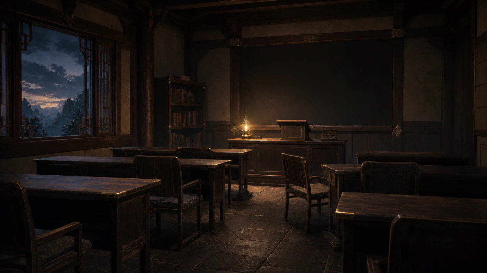
旧课堂
暖灯木桌 · 家的等待感狼先生学院的起点。一柱一壶，五人自来。灯亮着，椅子留着，黑板空着——梓说过：走得再远，我的课桌一直在这里。
故事发生在这些地方。十二处地点，没有一个人在场——空着的课桌、雾里的塔、开着的门，都在等谁走进来。
把它们放在一起看，一整卷《无月》的路，就铺开了。

狼先生学院的起点。一柱一壶，五人自来。灯亮着，椅子留着，黑板空着——梓说过：走得再远，我的课桌一直在这里。
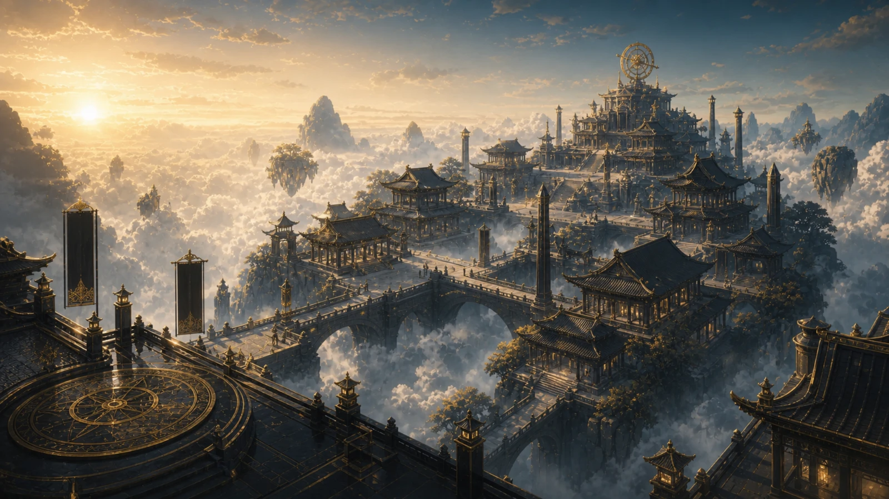
谷地之外、更远的学域。晨光落在长桥上，星图与浑天仪立于高处——梓一程一程学成，又一程一程回到这间课堂。
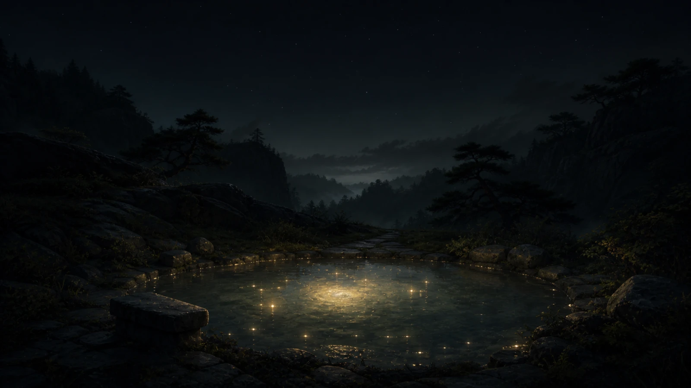
旅途中的一口气。夜谷里的静泉，水面浮着稀疏的星屑，在水底聚成一小圈旋涡——最亮的那颗，从来不是数出来的，是被等出来的。
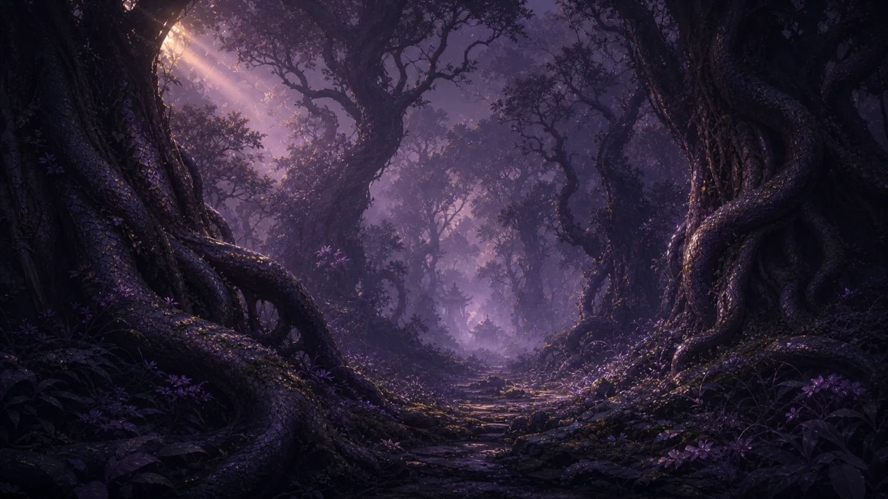
叶王的黑域深处。古树的根盘成蛇鳞的模样，紫雾里一条中央小径通向更暗的地方。华美，是这里最危险的部分。
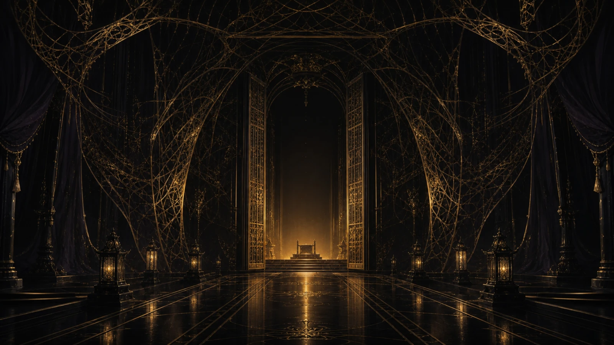
全卷的题眼。黑石金木的大殿，两侧金丝弯成一具优雅的笼；尽头一对格栅门朝着空座敞开，只有一束暖光把你请进去。「最好的囚笼，让人心甘情愿地走进去。」
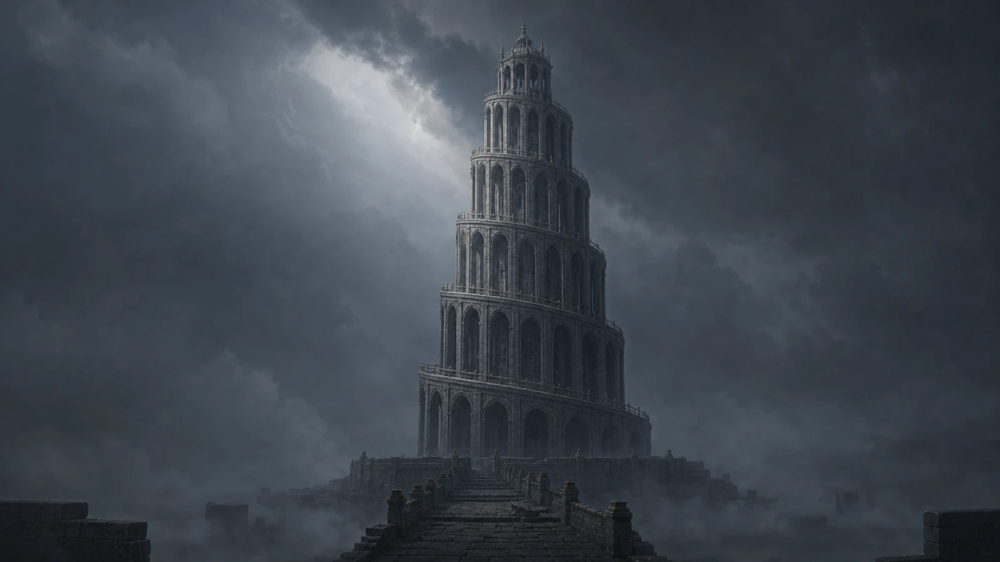
三国之外的第三极。鹦鹉学院信奉「正确答案只有一个」，把知识一层层灌进去。一圈圈相同的拱窗向上收拢，像永远回不完的回声。
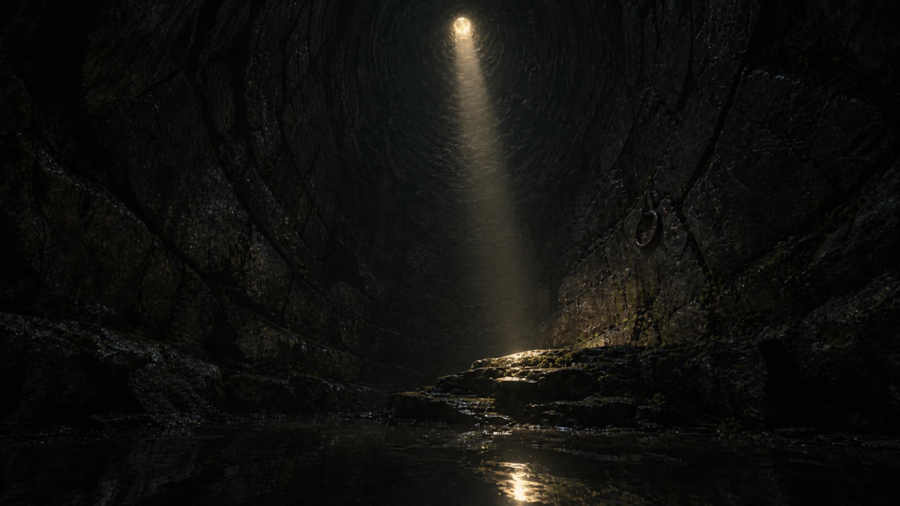
越界的代价。屿化鸟越过断云、与诺在云上对视一眼，两国自此开战；他被囚在这口深井里七十日，头顶只剩一线天光——那既是牢，也是没灭的希望。
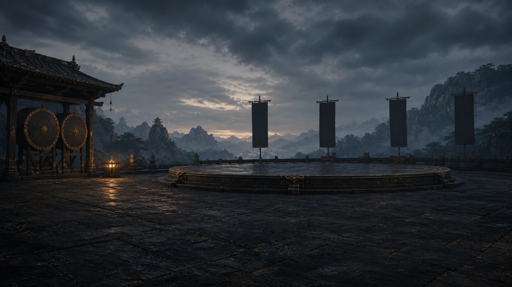
大战前的空场。战鼓已就位，旗子还空着，石台在雾里等一场没有月亮的夜——八月十五，无名之原，三界共燃就要开始。
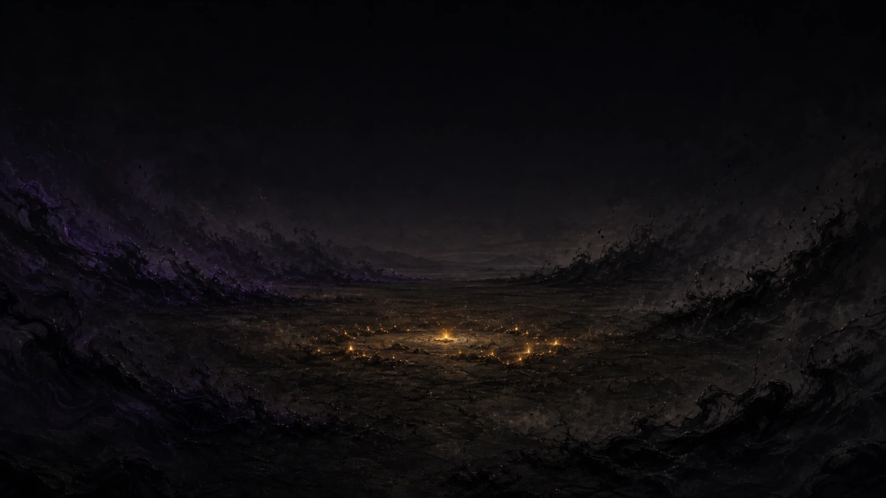
全卷收场的地方。八月十五，天上没有月也没有星，一片没有名字的旷野；紫黑的潮水从四面压向中央，唯一的光是地上那一小簇没烧完的余烬——「那一夜没有月，也没有星。所有的光，都来自地上的人。」
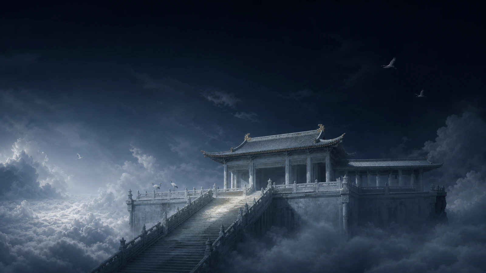
断云之上更高处的天界。苍白玉石的仙庭悬在云海之巅，白鹤在深靛的夜空里盘旋，清冷、高远、可望不可及。终章，白鹤宰相从这里放下天之国的援军；屿曾越界闯入、被囚于此。
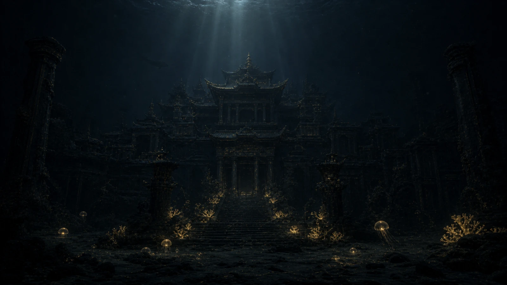
海族之乡（麒、屿皆出于此）。沉在深海里的殿庭，近乎全黑，光只从极高处漏下几缕；暗水里点着金色的生物荧光——海的深处，也有和地上一样不肯灭的微光。终章，屿带回海域同盟驰援。
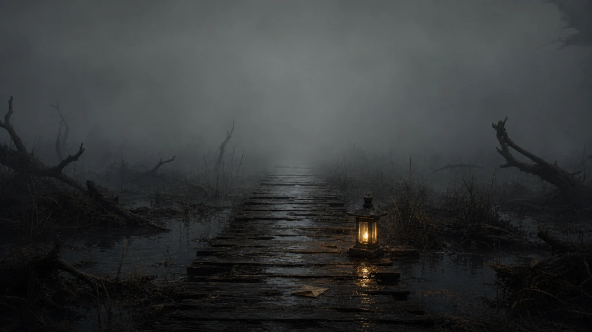
悬案留在这里。湿木栈道伸进浓雾，尽头被雾吃成一片空白；雾里还亮着一盏没灭的小灯，栈道上落着一页被雾洇湿的信。佳随师采集古卷，在这片边境沼泽一入不返——「水不凉，别跟过来。」